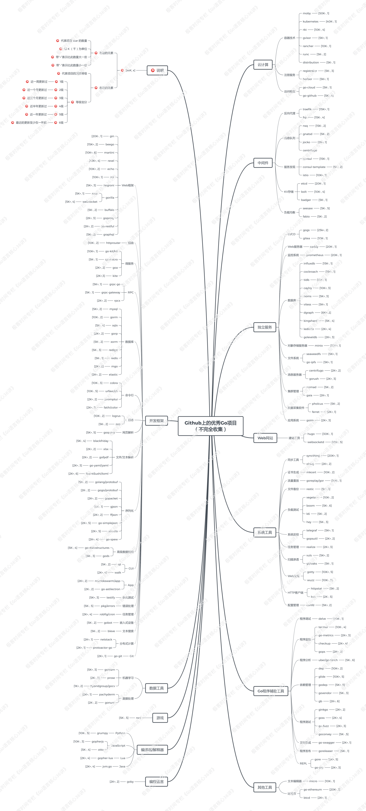

- 00 导读 写给0基础入门的Go语言学习者.md.html
- 00 导读 学习专栏的正确姿势.md.html
- 00 开篇词 跟着学，你也能成为Go语言高手.md.html
- 01 工作区和GOPATH.md.html
- 02 命令源码文件.md.html
- 03 库源码文件.md.html
- 04 程序实体的那些事儿（上）.md.html
- 05 程序实体的那些事儿（中）.md.html
- 06 程序实体的那些事儿 （下）.md.html
- 07 数组和切片.md.html
- 08 container包中的那些容器.md.html
- 09 字典的操作和约束.md.html
- 10 通道的基本操作.md.html
- 11 通道的高级玩法.md.html
- 12 使用函数的正确姿势.md.html
- 13 结构体及其方法的使用法门.md.html
- 14 接口类型的合理运用.md.html
- 15 关于指针的有限操作.md.html
- 16 go语句及其执行规则（上）.md.html
- 17 go语句及其执行规则（下）.md.html
- 18 if语句、for语句和switch语句.md.html
- 19 错误处理（上）.md.html
- 20 错误处理 （下）.md.html
- 21 panic函数、recover函数以及defer语句 （上）.md.html
- 22 panic函数、recover函数以及defer语句（下）.md.html
- 23 测试的基本规则和流程 （上）.md.html
- 24 测试的基本规则和流程（下）.md.html
- 25 更多的测试手法.md.html
- 26 sync.Mutex与sync.RWMutex.md.html
- 27 条件变量sync.Cond （上）.md.html
- 28 条件变量sync.Cond （下）.md.html
- 29 原子操作（上）.md.html
- 30 原子操作（下）.md.html
- 31 sync.WaitGroup和sync.Once.md.html
- 32 context.Context类型.md.html
- 33 临时对象池sync.Pool.md.html
- 34 并发安全字典sync.Map （上）.md.html
- 35 并发安全字典sync.Map (下).md.html
- 36 unicode与字符编码.md.html
- 37 strings包与字符串操作.md.html
- 38 bytes包与字节串操作（上）.md.html
- 39 bytes包与字节串操作（下）.md.html
- 40 io包中的接口和工具 （上）.md.html
- 41 io包中的接口和工具 （下）.md.html
- 42 bufio包中的数据类型 （上）.md.html
- 43 bufio包中的数据类型（下）.md.html
- 44 使用os包中的API （上）.md.html
- 45 使用os包中的API （下）.md.html
- 46 访问网络服务.md.html
- 47 基于HTTP协议的网络服务.md.html
- 48 程序性能分析基础（上）.md.html
- 49 程序性能分析基础（下）.md.html
- 尾声 愿你披荆斩棘，所向无敌.md.html
- 新年彩蛋 完整版思考题答案.md.html
- 捐赠
00 导读 学习专栏的正确姿势
你好，我是郝林，今天我分享的主题是，学习专栏的正确姿势。
到了这里，专栏的全部内容已经都推送到你的面前了。如果你已经同步学习完了，那么我要给你点一个大大的赞！
还没有看完的同学也不要着急，因为推送的速度肯定要比你们的学习速度快上不少。如果是我的话，我肯定无法用很快的速度，去认真地学习和理解专栏内容的。不过，粗读一遍的话，这个时间倒是绰绰有余的。我今天就想跟你聊聊学习专栏的正确姿势。
专栏应该怎样学
我们做互联网技术的人，应该对这种索引+摘要+详情的数据存取方案并不陌生。我希望我的专栏文章也可以达成这样的一种状态：它是你需要时，即能查阅的知识手册。
在第一次听音频或浏览文章的时候，你可以走马观花，并不用去细扣每一个概念和每一句话。让自己对每一个主题、每一个问题和每一个要点都有一个大概的印象就可以了。
如此一来，当想到或遇到某方面的疑惑的时候，你就可以有一个大致的方向，并且知道怎样从专栏里找出相应的内容。
这就是所谓的粗读，相当于在你的脑袋里面存了一份索引，甚至是一份摘要。利用这种快速的学习方式，你往往可以在有限的精力和无限的知识之间做出适合你的权衡。
极客时间可以让我们无限期地查阅专栏的全部内容。所以你完全不用心急，可以按照自己的节奏先粗读、再细读，然后再拿这个专栏当做知识手册来用。重要的是真正的理解和积极的实践，而不是阅读的速度。
实践的正确姿势
最近一段时间，有不少同学问我说：“老师，我快要学完这个专栏了，也买了你的书，那我后边怎么去实践呢？”
问我此类问题的同学，大多数都是很少有机会在工作中使用Go语言的程序员，或者是对Go语言感兴趣的互联网领域的从业者，还有一些是在校的大学生。
我给大家的第一个建议一般都是“去写网络爬虫吧”。
互联网络的世界很庞杂，但又有一定的规律可循，是非常好的技术学习环境。你编写一个网络服务程序，即使放到了公共的网络上，也还需要考虑清楚一系列的问题，才能让你有足够多的技术磨炼机会，比如，服务的种类、功能、规则、安全、界面、受众、宣传和访问途径，以及日常的非技术性维护。
我认为，这已经不是纯粹的技术实践了，对于初期的技术技能增长是不利的。当然了，如果你有信心和精力去搞定这一系列问题，并乐于从中学习到各种各样的技能，那就放手去做吧。
我在我的书和专栏中一直都在释放这样几个信号：“并发程序”“互联网络”“客户端”“网络爬虫”。这其实就是我们实践的最佳切入点。它成本低，收效明显，既有深度又有广度。
有的同学还问我：“我的程序爬取了某某网站，可是只爬了两三下就好像被人家封掉了”。原因很明显，你暴力获取人家的网站内容，肯定会封你的啊。
我们要让程序去模拟人的行为，模拟人使用网络浏览器访问网站内容的过程，而不是用尽计算力去疯狂地霸占人家的带宽和服务，否则那不就成了网络攻击了。这是一个非常重要的自我实践的技巧，请大家记住，“利己，但不要损人”。
注意，正常爬取网站内容并不意味着失去了高并发的应用场景。把内容下载下来只是一个开始，后边还有不少的工作要做呢。
单单“模拟人”这一点就需要花一些心思。而且，你可以同时爬取成千上万的同类甚至不同类的网站。这已经足够你研究和实践很长一段时间了。我在这里还要郑重地提示一下，做这类技术研究一定不要跨越道德的底线，更不能违反法律。
再进一步，我们最好以结构化的形式把爬取到的网络内容存储下来。当得到足够多的数据之后，你的选择就很多了。比如，对某类数据进行整理、提取和分析，从而挖掘出更有价值的东西。这就属于数据挖掘的范畴了。
在如今这个数据过剩的时代，这也是一项很重要的技能。又比如，基于这些数据提供统一的访问接口，制作成搜索引擎，甚至对外提供服务。这也是一个很有深度的选择。
当然，技术实践的方式远不止这些。不过鉴于篇幅，我就先说这么多。
优秀Go项目推荐
最后，我再给大家推荐一些优秀的Go项目。别忘了，阅读优秀的项目源码也是一个很重要的学习途径。请看下图。
- （长按保存大图查看）
这幅图包含了我之前私藏的所有高Star，且近期依然活跃的Go项目。不得不说，在Github这个全球最大的程序员交友社区中，好东西真的是不少。
在这幅图的左上角，有我对图中各种符号的说明，大家在进一步读图之前需要先看一下。参看这些项目的顺序完全由你自己决定，不过我建议从“贴近你实际工作的那个方面”入手，然后可以是“你感兴趣的方面”，最后有机会再看其他的项目。千万不要贪多，要循序渐进着来。
© 2019 - 2023 Liangliang Lee. Powered by gin and hexo-theme-book.